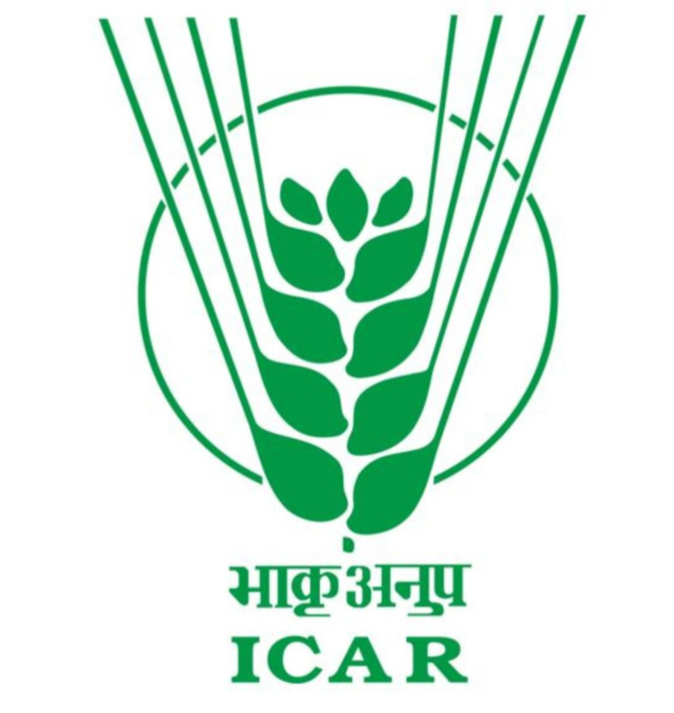

ICAR-KVK Phek
Tobacco Leaf Extract (TLE)
Insect Pest Management under Natural Farming
Guidelines for Preparation
Ingredients
- 1 kg fresh tobacco leaves
- 5 litres of clean water
Preparation Method
- Boil 1 kg of fresh tobacco leaves in 5 litres of water.
- Continue boiling until the solution reduces to about half.
- Allow the extract to cool completely.
- Filter the extract using a clean cloth.
- Store it in a clean, tightly closed container.
How to Use
- Dilute the extract with water before spraying.
- Spray during early morning or late afternoon.
- Avoid spraying during hot sunshine or before rainfall.
Benefits
- Controls sucking and chewing insect pests.
- Eco-friendly and suitable for natural farming.
- Prepared from locally available materials.
Prepared and Recommended by:
ICAR – Krishi Vigyan Kendra (KVK), Phek, Nagaland